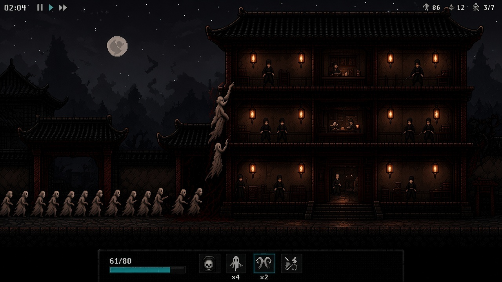
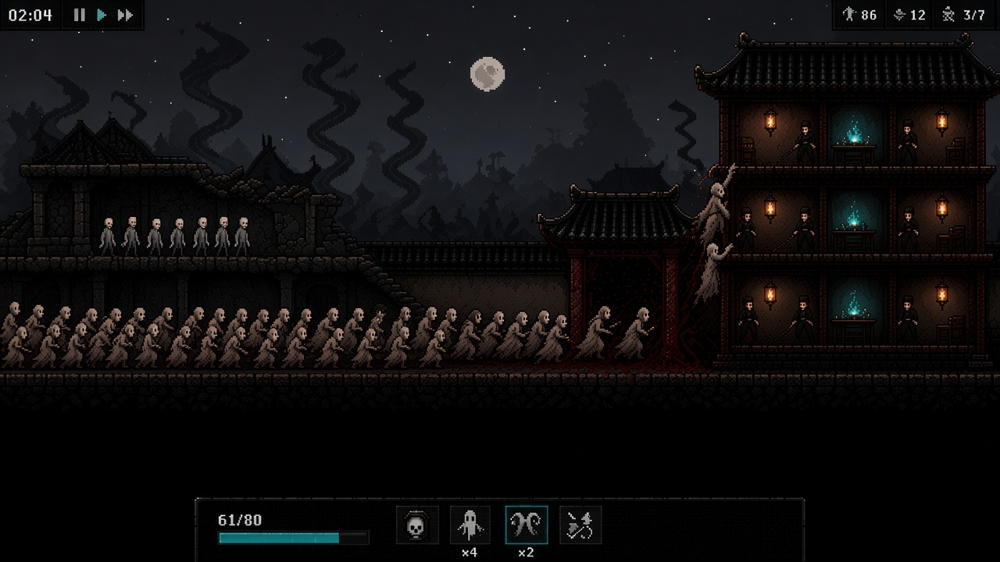
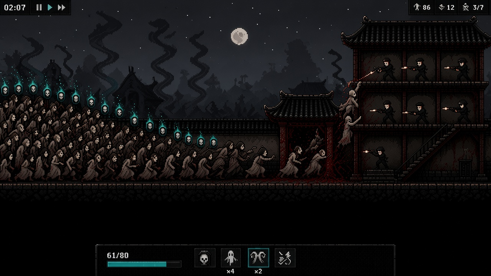
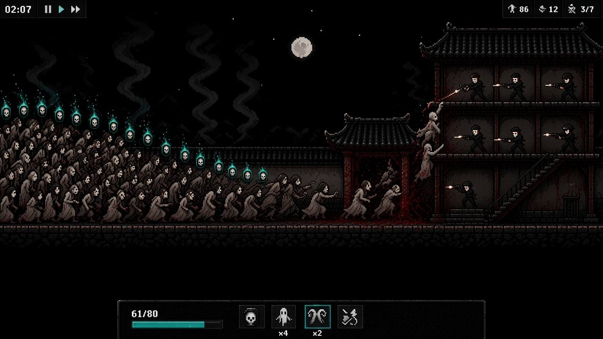
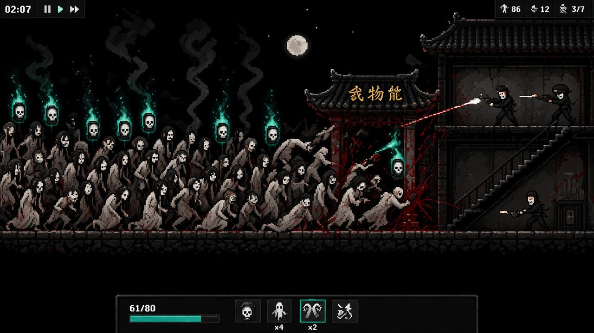
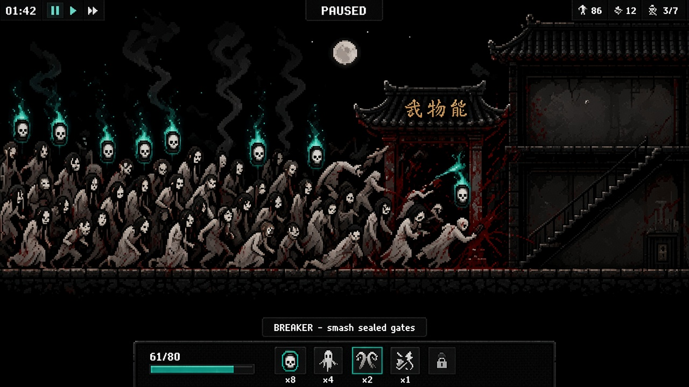
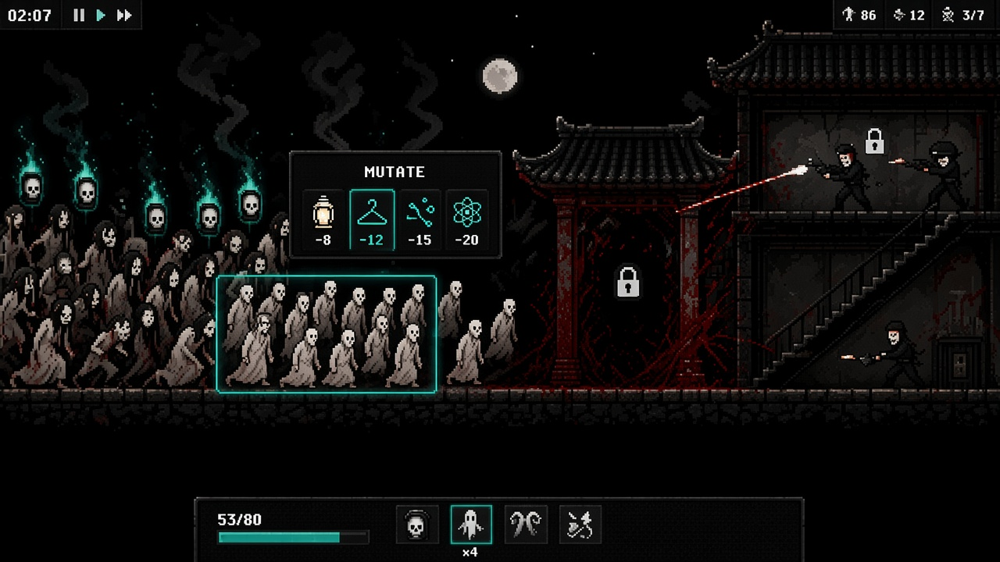
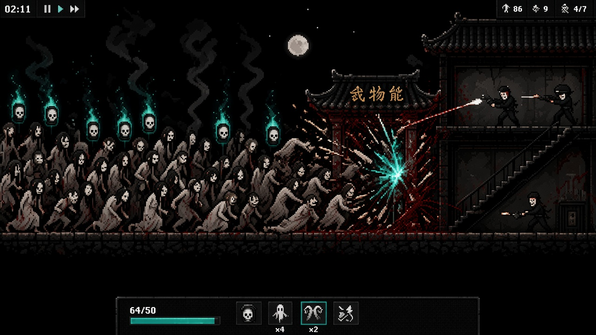
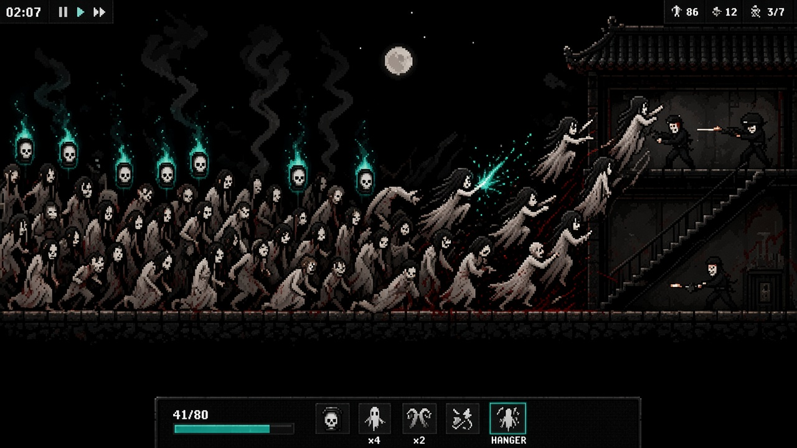

夜祠
在名字开始从世上脱落的夜里，你守住一册尚存的名，或率领无名之潮去夺回一张脸。
当前进度
以后每次改方案、补关卡或调整编制，都会更新到这一页。你可以把这个地址收藏起来，不用再到 GitHub 里一个个点开文件。
设计方案 v0.2，并锁定战场尺度
- 方案 A 墨煞像素作为实机视觉锁定
- 三种坐席：守香、夺名、观祭，共用同一套规则
- 32 名人物、32 种鬼物的编制、技能与特性
- 变异、融契、香器、今夜科仪与平衡框架
- 公开仓库与本阅读网站上线
- 战场拉远、单位缩小：普通单位约占屏高 1/12–1/14，高潮夜同屏 80–150+
- 画面框锁定：16:9，可玩世界铺满上部 60%–72%，夜空是有星和远景的暗夜，不是纯黑上下边
- 场景布局与潮水分布：接近段高差、沿路 2–4 排的流，禁止三角山
- 人类阵营房间进深：每层 2–3 个房间，门洞、桌案、层高和人对得上，名册房可辨认
逐条讨论细节
- 场面、画面框、场景布局、潮水分布和人类房间进深已锁定
- 早期爽点图 04、05 将按第 09 号空间比例，并结合 08 的潮水密度重做
继续下一条细节
- 关卡块更细的设计与第一夜教学
- 数值与奖励池的第一轮校准
- 立绘与图鉴面板的样张
更新记录
- 锁定人类阵营的房间进深与设施比例。祠堂改为有门厅、香案、名册房的剖视建筑，门洞、桌案、层高与人对得上。
- 锁定场景布局与潮水分布。接近段增加高差，鬼潮改为沿路流动，不再堆成三角山。
- 修正画面框。可玩世界铺满 16:9 上半屏，夜空改为有星和远景的暗夜，不再是细带加纯黑上下边。
- 锁定战场尺度。新增尺度标准图，场面拉大、单位缩小，潮水须有纵深层次。
- 发布设计方案 v0.2，并上线本阅读网站。
画面锁定（方案 A）









0. 本文怎么用
先读第 1–3 章，确认这是一款什么样的成品，以及相对 v0.1 改了什么。再读第 4–9 章，理解三种模式如何共用同一套战场。第 10–13 章是 32 名人物、32 种鬼物、进化与香器的完整编制。第 14–17 章是图鉴立绘、平衡、关卡与肉鸽流程。第 18–21 章是叙事、美术 UI、1.0 范围与给执行模型的禁令。
配图在 art/ 目录，是已锁定的实机方向，不是可选参考。图中中文可能有生成误差，只看构图、密度、色板和 HUD 结构，不看字。
| 文件 | 用途 |
|---|---|
| 当前实机标准：人类阵营有进深的房间与设施，门、桌、层高和人对得上 | |
| 过程稿：接近段高差与沿路鬼潮；人类空间已由 09 取代 | |
| 过程稿：16:9 画面框，世界铺满上半屏；布局已由 08 取代 | |
| 过程稿：单位缩小与冲路纵深，画面框已由 07 取代 | |
| 早期构图，只保留色板与 HUD 结构，不再作为尺度依据 | |
| 暂停与底部指令/变异栏 | |
| 框选后的变异菜单与香火花费 | |
| 早期爽点：破门；尺度将按 06 重做 | |
| 早期爽点：缢鬼上楼；尺度将按 06 重做 |
v0.1 的旧美术（2.5D、时装海报立绘、神龛界面）不再作为实机标准。精美立绘改放到点击弹出与图鉴里，不铺在战场上。
1. 产品定位
《夜祠》是一款纯单机、可独立上架的 2D 侧视实时指挥游戏，带有肉鸽局内构筑。玩家默认扮演人类一方，在一夜之中守住名册与祠门；同时提供以鬼潮攻祠的「夺名」模式，以及共用同一套规则的自定义观祭。
- 平台： PC（Steam）为首发。键鼠是主操作，手柄需能完成全部指令（暂停、框选、菜单、加速）。
- 视角： 正交侧视 2D，类似《恐怖僵尸之夜》的舞台断面，不是俯视塔防，不是 2.5D 角色动作，不是全 3D。
- 画面： 方案 A「墨煞像素」。战场是清晰的低分辨率像素单位与功能向 HUD；点击单位才弹出精致立绘。调性为成人向灵异：深黑、骨白、溺青、干朱砂。禁止乡土破败纸扎村，禁止把战场画成时装海报或页游概念图。
- 时长： 单局一夜约 25–40 分钟。主线肉鸽可在数个夜晚内看到结局。长线深度来自构筑、图鉴、更高凶夜，而不是把单局拖长。
- 商业模式： 买断制。无内购、无抽卡、无体力、无在线强制。1.0 必须是一个有结局的完整作品；DLC 是以后的加章，不是补完游戏。
- 品质承诺： 以高精度打磨的游玩体验为先。单位可以共用骨架，但不允许用换色凑数、随机烂泥或半成品系统充数。每一位入表的人物和鬼物，都必须有独特技能、特性和可点击的立绘。
1.1 一句话
在名字开始从世上脱落的夜里，你守住一册尚存的名，或率领无名之潮去夺回一张脸。
1.2 玩家付费后真正买到的东西
- 一场能讲完的中式志怪故事。调性冷、阴、正，不靠跳吓，不靠仙侠。
- 两种坐席都成立的实时指挥：守香时你是少数人的指挥；夺名时你是鬼潮本身。暂停、框选、变异或点册，都要有清楚的反馈。
- 一套够深的一夜构筑：人物、鬼物、香器、技艺、融合与变异能组成明确的流派，并在爽点上兑现。
- 一套从头到尾统一的灵异视觉：战场是墨煞像素的实机，图鉴和点击面板才是精绘立绘。
1.3 这款游戏不是什么
- 不是 3D 动作，不是类《Hades》的单体闪避砍杀。
- 不是回合制。
- 不是以种田、养成经营或抽卡为主。
- 不是网游或直播赛事产品。「观祭」是单机里的自定义与观战，不为排位服务。
- 不是乡土民俗馆，不是「纸扎村」。纸只允许作为金箔符面、灯面和特效材质。
- 不是开放世界。关卡由手制块拼成，每一块都要有设计。
2. 相对 v0.1 的关键变更
| 项目 | v0.1（作废） | v0.2（现行） |
|---|---|---|
| 类型 | 2.5D 仪式动作 RPG | 侧视 2D 实时指挥 + 肉鸽构筑 |
| 玩家身份 | 只操作守香人「晚」 | 默认守香（人类），另有夺名（鬼潮）与观祭 |
| 战场 | 四分之三俯视，场面偏插画 | 正交侧视，数十到上百单位同屏 |
| 立绘 | 铺在战斗场景里 | 战场保持像素；点击与图鉴弹出精绘 |
| 成长 | 据点供奉、合祀 | 局内三选一构筑，变异、融契、香器 |
| 视觉 | 漆金华美、偏时装 | 墨煞像素、成人向灵异 |
故事骨架、主题和主角「晚」保留：有名才有脸，香火是可见的记忆，无册要抹去一切名字。习俗必须改规则，不能只当皮肤。
3. 我在需求之外锁定的优化
以下是在甲方五点之上，为了可做、可深、可爽而锁定的设计。执行时视为正式规则，不是建议。
3.1 一套规则，三种坐席
守香、夺名、观祭共用同一战场、同一单位、同一数值、同一胜负判定。禁止为某一模式另写一套战斗公式。一个单位在守方难缠，在攻方就该好用，两边一起调。
3.2 四种阵营，而不是红蓝对打
- 香火： 尚有名字的人。守香模式的玩家阵营。
- 野鬼： 无名或残名的潮。夺名模式的玩家阵营；守香时是压力来源，也可被超度。
- 祠神： 被供住的存在。可短暂借神，威力高，有隐藏代价。
- 无册： 真正的后期压力。抹名、夺面、篡改阵营，不跟任何一方讲人情。
无册保证长线不会变成「人打鬼」的重复波次。
3.3 只有两种局内资源
香火与名分。香火驱动技能、变异、超度、修门和借神。名分是你今夜还握着的「名字存量」，既是部分技能的燃料，也是可见的失败线之一。禁止再加金木石粮人口等经营资源。
3.4 人类的独特动词是「点册 / 超度」，不是只射怪
守香如果只做塔防射击，深度会很快见底。人类必须能对一只鬼花费时间和香火，把它点册、送行或冒险收编。杀更快，超度更值：掉香火、掉图鉴、有时得到一名灰色友军。无册会干扰这个过程，所以它不是无风险的优解。
3.5 习俗是今夜规则，不是皮肤
每一局抽一条「今夜科仪」。它改胜负或资源，例如中元夜必须超度足够的水鬼，祭灶夜香火回复加快但火会蔓延，接寿夜要护住一位老人。关卡块、事件和部分奖励池随科仪偏移。
3.6 深度来自标签组合，不来自把单位堆到无限
1.0 锁定 32 名人物 + 32 种鬼物（另有少量无立绘的杂兵模板，不算在 32 里）。每一位都有专属技能和特性。可玩深度靠约 12 个可读标签的协同、变异路径、融契和香器，而不是做第八十个换色单位。
3.7 手制关卡块 + 肉鸽拼装
纯手搓一整条战役会把重玩做死；纯随机会失去《恐怖僵尸之夜》那种「这扇门、这道梁、这条水巷」的关卡记忆。1.0 做一批手制块（门、二楼梁、水巷、名册房、井、戏台、桥、侧殿），由今夜种子拼成关，第一夜固定手搓，用于教学。
3.8 元进度只解锁，不加永久数值
过关解锁人物、起始鬼种、变异方、科仪和凶夜修饰。禁止账号级攻击力、生命成长把紧张感吃掉。失败也要进图鉴：今夜抹掉你的那张脸，仍该被你看见。
3.9 观祭克制范围
观祭是自定义编成、双方 AI 对祭、以及有限的导演介入（暂停查看、点选查看立绘、可选地插入有限次指令）。它用来看爽点、测构筑、分享种子。不做成竞技平台，不另做内容线。
3.10 战场必须远、单位必须小
默认镜头要同时看见来路、冲路、正门和至少三层可交战空间。普通单位只占全屏高度的约 1/12 到 1/14，高潮夜同屏要能到 80–150 个单位。尺度、画面框、场景布局、潮水分布，以及人类阵营的房间进深与设施比例，见第 19 章和第 09 号实机图。禁止靠推近镜头、放大单位来「看清角色」，也禁止把可玩区压成细带、把天空画成纯黑上下边，更禁止把祠堂做成路边九宫格小盒子、把鬼潮堆成三角山。
4. 三种模式
4.1 守香（默认，优先引导）
玩家指挥守香人「晚」及其今夜编制，防守侧视祠场。你不是在场上连点闪避的动作角色，你是暂停下来点册、调人、修门、放符的指挥者。
常见目标（每关取一主一副）：
- 坚守至科仪完成或天亮（计时）。
- 名册香火不被抽干。
- 正门或指定侧门未被彻底砸开。
- 二楼名册房或戏台未被缢鬼占领。
- 超度指定数量的残名，或护住一位必须活到天亮的人。
失败： 名册熄灭、关键人物全灭且无法复香、目标房间失守、或科仪被无册写坏。失败要让人看得出是哪一条线先断的。
4.2 夺名（鬼潮攻祠）
玩家指挥无名之潮，结构靠近《恐怖僵尸之夜》：你是潮，不是一座塔。暂停、框选、花香火把一批鬼变成能破门、能上楼、能扰香的形态，再把它们送去夺名、夺面、或打断科仪。
常见目标：
- 在天亮前砸开正门，冲进名册房。
- 让缢鬼或同等单位占领二楼。
- 抽干名册，或成功夺下足够的名分。
- 保护一名关键精英不被超度（对位守香的「护人」）。
失败： 潮被清空且无法再从阴缝增援、关键破门/上楼单位全被超度、天亮而目标未成。
主题动词是「续名 / 夺名」，不是血腥感染。潮可以给人一张空脸或夺走一张脸，演出走灵异，不走丧尸啃食。
4.3 观祭（自定义 / 看比赛）
同一模拟器上的沙盒。玩家先编排双方编制、地图块组合、香火初值、AI 凶度与科仪，然后选择：
- 对祭： 自己坐在其中一侧，另一侧由 AI 执掌。
- 观战： 两侧皆 AI，玩家旁观。可暂停、点击查看立绘与数值，可选打开导演权限（每场有限次指令）。
- 种子复盘： 输入或分享一串今夜种子，重看同一场。
观祭必须跑和正赛完全相同的规则，否则它不能当平衡工具，也不能当表演场。
5. 一局怎么玩（肉鸽循环）
一局叫「一夜」。推荐时长 25–40 分钟。
- 入夜。 选模式（守香或夺名）。守香默认从「晚」起夜，可解锁其他值夜者作为起始；夺名默认从白衣潮起夜，可解锁其他种子鬼种。再抽或自选一条今夜科仪。
- 夜程图。 节点约 8–12 个，含战斗、事件、夜市、休整、头目。分支明确：稳妥、风险、专项（例如水巷特化、上楼特化）。
- 战斗节点。 侧视舞台，实时进行，可随时暂停。提供播放、暂停、二倍速。暂停时可以框选、下达走位、点册/变异、使用香器主动效果。
- 战后三选一。 从加权池里出三张：人物（或新鬼种）、变异方、香器、技艺、名帖、事件、修门/复香。只能拿一张。这是构筑的主入口。
- 夜市与事件。 可花香火买指定类型，或承担风险换更强的东西（错名、暂面、借神）。
- 头目。 今夜终局是祠神失控、大型厉鬼或无册吏。头目检查的是构筑是否成派，不是突然加血。
- 结夜。 胜则结算名分、图鉴、解锁和结局倾向；败则仍写入图鉴，并给出是哪条失败线先断。
「过关、坚守多久、选奖励、组成 build、打出爽点」全部落在这一夜里，不另做一套无构建的线性战役来分薄内容。另设「例夜」难度，用固定第一夜做教学，再转入随机夜程。
6. 核心规则
6.1 战场结构
舞台是侧视断面，通常有：
- 地面主路与可被砸的门。
- 至少一层上层空间（梁、回廊、二楼房间），需上楼类单位才能到达。
- 可选水巷、井、桥、侧殿，作为特殊路径。
- 名册所在的房间，是守香的心脏、夺名的终点。
单位有所在层、所处房间或门前位置。路径必须可读：玩家一眼能看出「这波如果不在梁上留人，缢鬼会从上面进去」。
6.2 指令
| 输入 | 行为 |
|---|---|
| 空格 | 暂停 / 继续 |
| 鼠标拖拽 | 框选己方单位 |
| 右键或指令按钮 | 移动、坚守、冲门、上楼、撤退 |
| 底部栏 | 守香为点册、放符、修门、香器；夺名为变异、融契、增潮 |
| Tab 或点击单位 | 弹出立绘与数据面板，游戏保持暂停或自动暂停 |
+ / - 或按钮 |
一倍速 / 二倍速（暂停中不走时间） |
不允许做成必须靠手速连点的动作游戏。高难度应当来自判断和资源，不是来自点不过来。
6.3 单位在场上怎么活
- 守香编制： 以具名人物为主，一场建议上限 8 名上场人物，可另有少量杂兵（乡勇、弩手、祠役）填线。杂兵无精绘立绘，只有剪影卡，避免冲淡图鉴。
- 夺名编制： 潮的上限初稿为 80–120，另加有限的精英与变异体。潮要看起来像潮，精英要在潮里能被认出来。
- 阵亡与超度： 人物可在休整或用香器有限复活，但不免费。鬼被超度后离开潮；若被收编，转为灰色友军，仍可被无册夺回。
6.4 初稿资源曲线（可调数字，不可拆掉结构）
- 开夜香火：守香 20，夺名 16。
- 普通战斗过程中，香火会缓慢自然回，科仪和部分香器会改速率。
- 超度一只普通野鬼：耗时约 3–5 秒，花费 4–6 香火，回报 2–4 香火与 1 名分（净收益靠走完过程，中途被打断则亏）。
- 变异初稿花费：青灯 8，缢鬼 12，力士 15，融契 20（与已出的 UI 图一致，作为基准）。
- 名分掉到 0：守香视为名册将熄，进入最后窗口（短时仍可抢回）；窗口结束则失败。夺名将名分抽到 0 可视为一种胜利条件（若本关目标是抽册）。
7. 习俗如何改规则（今夜科仪）
1.0 先做 12 条科仪，每夜抽 1 条。科仪必须改规则，而不是只换背景装饰。
| 科仪 | 规则变化 | 关卡与奖励偏移 |
|---|---|---|
| 例夜安香 | 无额外修正，教学与基准平衡用 | 标准块 |
| 中元放灯 | 水鬼增多；超度水鬼额外给名分；未超度的水鬼在水巷里更强 | 水巷块权重提高 |
| 祭灶 | 香火回复加快，但部分技能会在地上留火，误伤双方 | 偏符法与控制 |
| 接寿 | 必须护住一位「尚有寿数的人」到天亮；其阵亡则直接失败 | 护卫向人物权重提高 |
| 开面 | 本夜立绘与面孔相关效果加强；无面单位更怕灯 | 灯、面匠、夺面使权重提高 |
| 祭桥 | 桥与隙是主路，破桥会切断增援 | 桥块必出 |
| 禁声 | 大声技能（钟、锣、哭）会被反噬，但也能震开隐形 | 偏潜行与反潜 |
| 列名夜 | 点册与超度加快，无册吏更早出现 | 中后期压力提前 |
| 寒食 | 不能用火类技能，香火回复变慢，物理与符封变强 | 武卫与符师 |
| 上梁 | 二楼成为主战场，不上梁就守不住 | 缢鬼与机关权重提高 |
| 游神 | 可更便宜地借神，但空位神混入的概率提高 | 高风险高回报 |
| 无册渗透 | 开夜即有轻度抹名，头目必为无册谱 | 高难选项，也作为凶夜基底 |
DLC 用新时令加科仪，不推翻这张表。
8. 阵营、标签与克制
8.1 标签（约 12 个，必须写在单位卡上）
香火 名面 破门 上楼 水巷 灯 符 金 哭 无册 超度 机关
构筑是标签引擎。例如「灯 + 符」克潜行与无面，「破门 + 上楼」是夺名的经典双线，「超度 + 名面」是守香的长线经济，「无册」标签既强也容易被列名夜克制。
8.2 可读克制（给玩家看，不藏在公式里）
| 压力 | 常规解 | 反制 |
|---|---|---|
| 潮涌堵门 | 符封、爆竹控场、范围打击 | 潮中混入散香影，超度时爆炸 |
| 力士破门 | 铁肩扛门、土垒、封门符 | 祠奴知道机关弱点，专打修门者 |
| 缢鬼上楼 | 梁上留人、灯揭示、机关拒马 | 影步与童亡改走窗 |
| 水鬼拖人 | 河灯、桥上设防、超度 | 中元夜水鬼吃超度以外的伤害更抗 |
| 潜行贴脸 | 青灯、敲更、开面科仪 | 禁声夜灯与锣会反噬 |
| 抹名 / 夺面 | 青笺点名、面匠暂面、寄名童抵一次 | 无册渗透夜这些手段变贵 |
| 人类点册超度 | 夺名方优先打断点册者，或派出空白册页 | 守香可用寥的禁声保护点册 |
9. 编制结构与制作方法
为了 32+32 可做完，而不是纸面繁荣：
- 战场像素单位按原型骨架制作。人类约 8 套（祝、卫、符、匠、童、客、盾、游），鬼物约 8 套（潮、长肢、上楼、破门、水、灯骨、大形、无册吏）。
- 每个入表单位有：独立色板与头面、1 个专属技能特效、1–2 条特性、1 张精绘立绘、图鉴文本。
- 禁止只换色当新单位。若两个单位在暂停点开后技能和特性都分不清，就应合并。
- 杂兵模板不超过 4 种，无名无精绘，只用于填线。
10. 人物编制（32）
守香模式可上场、可在肉鸽中招募的具名人物。夺名模式里他们是守祠的对手，数据完全相同。点击均可弹出立绘。
10.1 守香司（8）
| 编号 | 姓名 | 定位 | 专属技能 | 特性 | 标签 |
|---|---|---|---|---|---|
| H01 | 晚 | 值夜指挥，默认主角 | 点册：指定一只鬼进入超度/收编读条，并短暂暴露隐形 | 青灯眷顾：场上有青灯或灯骨时，点册加快 | 香火, 超度, 名面 |
| H02 | 祝禧 | 老祠祝，回复 | 复火：立刻给名册或一名人物恢复香火 | 余烬：自身阵亡前把剩余香火还回名册 | 香火 |
| H03 | 青笺 | 记名女史，抗抹除 | 点名：令一名友军本场暂时「有名」，免疫一次抹名 | 册香：每次成功超度，为名册补少量名分 | 名面, 超度 |
| H04 | 烬 | 香童，早期经济 | 分香：把自身香火分给相邻友军 | 稚肩：体弱，但在名册房内操作加快 | 香火 |
| H05 | 寥 | 哑祝，反仪式 | 禁声阵：区域内敌我大声技能失效 | 无口：不能被魅惑或问话类技能改变阵营 | 符, 超度 |
| H06 | 霜盏 | 灯司，揭示 | 青灯领域：驱散区域内隐形，并对无面造成恐惧 | 灯冷：对火类科仪不免疫，对暗处加成 | 灯, 名面 |
| H07 | 阿卯 | 更夫，支援 | 敲更：唤醒眩晕友军，并短时揭示周围 | 值夜：二倍速下仍按正常节奏警戒（减少加速漏防） | 灯, 机关 |
| H08 | 沈册 | 名册看守 | 护册：短时间内名册受到的抽取大幅降低 | 同烬：名册伤越重，沈册防御越高，移动越慢 | 名面, 香火 |
10.2 武卫司（8）
| 编号 | 姓名 | 定位 | 专属技能 | 特性 | 标签 |
|---|---|---|---|---|---|
| H09 | 铁肩 | 门卫，抗破门 | 扛门：贴门时把门耐久暂时算在自己身上 | 门仆：离开门口后技能冷却加长 | 破门, 金 |
| H10 | 断刃 | 刀客，单体高伤 | 决斩：对残血精英必做一次重创 | 孤刀：身旁没有友军时攻击提高，被集火更脆 | 金 |
| H11 | 石婆 | 筑垒 | 土垒：在指定地面抬起一截短墙，可被力士砸坏 | 根深：站定越久防御越高，一移动就清零 | 机关, 破门 |
| H12 | 巡夜 | 捕快，控制 | 锁链：拉住一个单位，禁止上楼或遁水 | 官差：对腐差、仪仗类单位伤害提高 | 金, 符 |
| H13 | 赤钺 | 刽子手，斩杀 | 行刑：瞬斩一只残血野鬼，不走超度 | 血腥账面：若斩杀的是可超度目标，失去名分 | 金 |
| H14 | 铜锣 | 盾卫，挡路 | 鸣锣：强制附近敌方转来打自己，并造成短暂眩晕 | 禁声夜弱化：本特性在禁声科仪中改为无眩晕的纯粹嘲讽 | 哭, 金 |
| H15 | 白脚 | 机动支援 | 飞瓦：快速换层或换路，落到指定友军旁 | 轻身：血少，但不吃部分地面减速 | 上楼, 机关 |
| H16 | 丧杖 | 克鬼武卫 | 开路杖：对鬼物额外伤害，并短时降低其防御 | 生人勿近：友军人物在其身旁回复降低 | 金, 超度 |
10.3 符法司（8）
| 编号 | 姓名 | 定位 | 专属技能 | 特性 | 标签 |
|---|---|---|---|---|---|
| H17 | 朱砂 | 符师，封路 | 封门符：暂时锁死一扇门或一道缺口的破坏 | 朱痕：符被打破时对破门者反伤 | 符, 破门 |
| H18 | 冷金 | 镜师，反术 | 金镜：反射下一次指向性邪术，并现形施术者 | 冷面：对魅惑抗性高，对物理更脆 | 金, 符 |
| H19 | 问灯 | 降仆，高风险 | 借鬼：短时收编一只野鬼为灰色友军 | 反噬：若该鬼在借期被无册触及，问灯自身会被错录 | 灯, 超度, 无册 |
| H20 | 焚词 | 疏文，范围 | 烧疏：对一片区域造成香火灼伤，并打断读条 | 耗香：每次施放额外烧掉一截全局香火 | 香火, 符 |
| H21 | 河灯 | 水巷特化 | 放河灯：水面上的敌方减速并暴露，可超度加快 | 旱弱：不在水巷时技能威力下降 | 水巷, 灯, 超度 |
| H22 | 三戒 | 还俗僧，驱散 | 破执：驱散一个单位的增益或伪神状态 | 戒余：对祠神与空位神伤害提高 | 超度, 符 |
| H23 | 月讳 | 忌名，干扰 | 错名：使一个敌人下一次技能施放失败或打偏 | 讳册：自身名字被抹时，改为随机传给一名友军 | 名面, 无册 |
| H24 | 骨针 | 点穴，稳定 | 点穴：眩晕一个单位，或稳住一个即将溃散的魂 | 针脚：对大形单位效果缩短，对童亡、影步效果加长 | 符, 名面 |
10.4 机关与奇人（8）
| 编号 | 姓名 | 定位 | 专属技能 | 特性 | 标签 |
|---|---|---|---|---|---|
| H25 | 榫卯 | 机关师 | 拒马：在地面或梁上放置可阻挡上楼/冲锋的障碍 | 巧手：修门和修墙花费更低 | 机关, 上楼 |
| H26 | 硝青 | 焰火匠，控场 | 爆竹：驱散一小片潮，造成短暂溃散而非高伤 | 祭灶亲：祭灶夜里不误伤友军 | 符, 香火 |
| H27 | 饲鸦 | 视野 | 放鸦：揭示一条路径上的隐形，并啄扰读条 | 夜眼：在灯灭区域仍保持少量视野 | 灯, 机关 |
| H28 | 赊灯 | 夜市枢纽 | 挂账：本场可打开一次个人夜市，刷新一件香器 | 胆小：门破后优先后撤，不能派去扛门 | 香火, 灯 |
| H29 | 盲弦 | 琴师，走位控制 | 一曲：吸引或推开一条路上的单位 | 以耳代目：无视隐形，但视野很短 | 哭, 符 |
| H30 | 寄名童 | 替名 | 替死名：消耗自身，替一名友军或名册抵消一次抹名 | 寄命：开场名分+1，自身被超度类效果瞄到会更危险 | 名面, 无册 |
| H31 | 归客 | 外乡猎鬼人 | 猎步：对标记过的精英造成一次穿越路径的打击 | 客籍：不享受祠内香火回复，自身输出较高 | 金, 灯 |
| H32 | 面匠 | 防夺面 | 暂面：给一个单位戴上冷金面具，免疫一次夺面或恐惧 | 开面亲：开面夜里暂面可同时小幅恢复名分 | 名面, 金 |
杂兵模板（不算 32，无精绘）： 乡勇（地面挡路）、弩手（远程）、祠役（修门慢、可搬香）、更卒（弱揭示）。只在编制出现缺口时作为三选一里的垫牌或开夜填线。
11. 鬼物编制（32）
夺名模式可生成、可变异、可在肉鸽中解锁的鬼种。守香模式里它们是来犯者，数据相同。点击均可弹出立绘。
11.1 无名潮（8）
| 编号 | 名称 | 定位 | 专属技能 | 特性 | 标签 |
|---|---|---|---|---|---|
| G01 | 白衣无面 | 基础潮 | 拥门：多人同时撞门时，破门效率略增 | 无面：怕灯，被超度时阻力低 | 名面 |
| G02 | 乞名鬼 | 偷香 | 乞册：靠近名册或点册者时缓慢抽取香火 | 跪乞：血越低越容易被超度成功 | 香火, 名面 |
| G03 | 哭夜 | 减防光环 | 哀声：周围敌方防御下降 | 禁声反噬：禁声夜里哀声会伤害自己 | 哭 |
| G04 | 影步 | 潜行 | 贴墙：在无灯区域隐形接近 | 见灯则现：被灯照到后短暂不能再隐 | 灯 |
| G05 | 饿鬼 | 续战 | 吞残：在倒下的单位处恢复势头 | 贪食：会为了吞残偏离主目标 | 香火 |
| G06 | 长手 | 远程骚扰 | 探爪：从较远处抓扰修门者或点册者 | 臂脆：前爪被集火时可暂时废爪 | 机关 |
| G07 | 童亡 | 钻窗快攻 | 窄门：可走窗和梁缝，不走正门 | 身小：易被范围技能清掉 | 上楼, 机关 |
| G08 | 散香影 | 反超度地雷 | 散香：被超度或阵亡时爆炸，打断附近读条 | 空壳：自身几乎无攻击 | 超度, 香火 |
11.2 习俗厉（8）
| 编号 | 名称 | 定位 | 专属技能 | 特性 | 标签 |
|---|---|---|---|---|---|
| G09 | 缢鬼 | 上楼核心 | 上梁：沿梁、柱、绳索换层，扑入二楼房间 | 颈线：在梁上极强，落地后短暂虚弱 | 上楼 |
| G10 | 水鬼 | 水巷拖曳 | 拖人：在水中把敌方拖离岗位，甚至拖入深水 | 上岸无力：离开水后攻击与速度下降 | 水巷 |
| G11 | 青灯骨 | 灯与揭示，也可灼人 | 提灯：为己方揭示，同时灼烧怕灯的单位 | 双面：守香超度成功后，有机会转化为晚的青灯助力（事件，非必然） | 灯, 名面 |
| G12 | 力士尸 | 破门核心 | 撞门：对门和土垒造成高破坏 | 愚力：优先打最近的门，可被嘲讽或琴声引走 | 破门 |
| G13 | 轿夫双鬼 | 成对冲阵 | 抬空轿：成对时撞击一条直线，拆散阵型 | 失偶：一只倒下，另一只紊乱 | 破门, 哭 |
| G14 | 喜服鬼 | 混乱 | 拜堂：魅惑或强制一名人物短暂攻击友军 | 喜丧：怕丧杖与三戒 | 哭, 名面 |
| G15 | 寿衣匠 | 辅助 | 披衣：给友军套上减伤的寿衣 | 量体：对已有名的人物披衣失败，改为短暂减速 | 名面, 金 |
| G16 | 腐差 | 秩序型厉鬼 | 勾名：点名一个人物，使其被集火 | 残衙：对巡夜、铜锣等「官」标签克制互相成立 | 名面, 无册 |
11.3 大形与精英（8）
| 编号 | 名称 | 定位 | 专属技能 | 特性 | 标签 |
|---|---|---|---|---|---|
| G17 | 山魅 | 拆楼 | 砸梁：破坏一层楼板或桥梁，改变路径 | 巨影：体型大，不能走窗，怕集火和处理后路 | 破门, 上楼 |
| G18 | 无头仪仗 | 多部位 | 错位行进：须打击仪仗的特定部位才会真正溃散 | 列队：周围有潮时减伤 | 金, 哭 |
| G19 | 镜中客 | 模仿 | 无面模仿：复制一个 vis 范围内人物的主动技能，但没有脸 | 怕镜：被冷金反射或面匠之面正视时会崩 | 名面, 金 |
| G20 | 阴骑 | 冲阵 | 夜驰：沿主路高速冲锋，撞开拒马前的单位 | 马失：在水巷或断桥上会跌倒 | 破门 |
| G21 | 钟口 | 范围眩晕 | 叩钟：大声震眩一片区域 | 禁声致命：禁声夜里施放会重伤自己 | 哭 |
| G22 | 胎梦 | 控制 | 入梦：使一个单位陷入梦中，暂时不能接受指令 | 易醒：受到灯或敲更会立刻中断 | 哭, 灯 |
| G23 | 借脸人 | 成长精英 | 借脸：每击倒一名有面的人物，自身变强并更像人 | 空核：被超度成功会一次吐出所有偷来的名分 | 名面, 无册 |
| G24 | 祠奴 | 反机关 | 拆骨构：专打机关、拒马、修门者，并知道侧门 | 旧人：可被问灯或三戒以更高成功率超度/破执 | 机关, 超度 |
11.4 无册谱（8）
| 编号 | 名称 | 定位 | 专属技能 | 特性 | 标签 |
|---|---|---|---|---|---|
| G25 | 抹名吏 | 剥夺名字 | 抹名：去掉一个单位的「名」，使其恐慌或技能失效 | 吏眼：优先打有名的人物，不屑打杂兵 | 无册, 名面 |
| G26 | 空白册页 | 反恢复 | 留白：区域内名册不能被复火、超度不能产生名分 | 薄纸：自身极脆，需潮保护 | 无册, 超度 |
| G27 | 倒香火 | 污染资源 | 倒香：把一块区域的香火回复变成毒烟，伤害双方 | 怕真火：祭灶与焚词对它克制 | 无册, 香火 |
| G28 | 夺面使 | 主题精英 | 夺面：偷走一名人物的脸，目标在短时间内变成无面（立绘在面板上裂开） | 满面：手里持有面孔时变强，被面匠或开面科仪克制 | 无册, 名面 |
| G29 | 错录师 | 改阵营 | 错录：短暂改写一个单位的阵营，使其攻击原友军 | 墨干：效果结束后该单位会眩晕，给反打窗口 | 无册, 符 |
| G30 | 空位神 | 伪祠神 | 受供：若被玩家误当作祠神来借，会大范围反噬 | 伪神：三戒的破执可直接揭穿 | 无册, 香火 |
| G31 | 千名一尸 | 堆名肉山 | 叠名：每偷得一个名字就更厚，技能变得混乱 | 名重：被一次成功的大规模超度或点名会崩掉多层 | 无册, 名面 |
| G32 | 无册 | 终局头目模板 | 开册：在场上投下多条抹名、夺面与留白，并试图改写今夜科仪 | 可被列名：若名分仍高、且点册流程被保护完成，头目会进入可被对抗的「列名窗口」 | 无册, 名面, 香火 |
无册（G32）是模板：不同凶夜换阶段招式，不另算新种。DLC 可加无册的新阶段，不替换这个编号。
12. 进化、变异、融契与装备
局内成长只走三层。禁止再叠天赋树、宝石盘、宠物栏和第二套卡组。
12.1 变异（夺名主动词，守香侧是来犯者的压力）
框选一批合格单位，花费香火改角色。基准四项与 UI 图一致，并在 1.0 再提供可解锁的变体方：
| 变异方 | 花费（初稿） | 从何而来 | 变成什么 | 用途 |
|---|---|---|---|---|
| 提灯 | 8 | 白衣、乞名、散香影 | 青灯骨或提灯变体 | 揭示、灼无面、给潮开路 |
| 上梁 | 12 | 白衣、童亡、影步 | 缢鬼 | 扑二楼，打名册房 |
| 破门 | 15 | 白衣、饿鬼、轿夫之一 | 力士尸 | 砸门、砸土垒 |
| 融契 | 20 | 任意两只合格单位 | 见 12.2 | 高冲击，限次 |
后续可解锁的方（仍算在变异系统里，不另开系统）：入水（变水鬼）、披衣（变辅助）、错名（给一只潮短暂无册特性，风险极高）。
限制：同一只单位一夜内不要连变三次。变是选择，不是无成本升级。
12.2 融契
把两只单位（或一只单位加一枚「残名」）合成更稀的形态。一夜限 1–2 次，必须有配方方向，不允许纯随机怪胎。
初稿配方例：
- 缢鬼 + 影步 → 梁上隐形的「悬线」
- 力士尸 + 阴骑 → 撞门冲锋的「门骑」
- 青灯骨 + 霜盏的残名（事件） → 短暂的双面灯
- 借脸人 + 夺面使 → 高危的「有脸无册」，几乎必须在头目前打出，也极易毁掉名分
- 问灯借来的鬼 + 三戒破执 → 转化为可控制的灰军，而不是临时工
融契结果要进图鉴。玩家是为了「亲眼见到那一次合成」而重开的。
12.3 香器、技艺、名帖（双方共用的构筑层）
每名上场人物，或夺名中的每只精英，可装：1 件香器、2 条技艺、1 枚名帖。潮中的普通白衣不占装备格，避免管理爆炸。
香器（1.0 先做 20 件，局内三选一或夜市出现）：
| 香器 | 效果要点 |
|---|---|
| 冷金面具 | 免疫一次夺面或恐惧 |
| 未燃残香 | 名册将熄时自动复火一次 |
| 朱砂印 | 封门符类效果延长 |
| 青灯盏 | 持有者周围持续揭示 |
| 梁钉 | 梁上单位不易被砸落 |
| 桥魂石 | 在桥上战斗加强，落水减免 |
| 更鼓槌 | 敲更类效果扩大 |
| 无字帖 | 可额外抵一次抹名，随后消失 |
| 倒流香 | 把一次受伤害转化为少量香火，有冷却 |
| 开山楔 | 破门效率提高，修门效率降低（攻守都有味道） |
| 河灯盏 | 水面超度加快 |
| 金镜残片 | 小幅反射邪术 |
| 寄名线 | 把一次致死转给杂兵或潮中的一只白衣 |
| 灶心火 | 祭灶夜里强化，其他夜有误伤风险 |
| 盲弦余音 | 周期性地轻微吸引附近敌方 |
| 空轿铃 | 轿夫、阴骑类冲锋加强，或守方预知其路径 |
| 册底针 | 点册不易被打断 |
| 丧杖穗 | 对鬼增伤，对人减回复 |
| 白骨钥 | 打开本关一个被锁的侧路径 |
| 无册残页 | 强力但持续渗名分，高危饰品 |
技艺（技能搭配，1.0 先做 16 条）： 例如「点册结束时小爆香」「门耐久低于三成时攻击提高」「超度成功给全场短暂加速」「梁上暴击」「水中不减速」「击杀回一点香火」「被魅惑时改为禁身」「二倍速下技能冷却不加快」等。每条技艺只改一个清楚的行为，不写长篇复合效果。
名帖（属性章，1.0 先做 12 枚）： 厚血、快步、锐刃、坚门、多香、显名、冷抗、哭抗、潜反、水适、梁适、忌无册。名帖只动属性与抗性，不动规则。规则变化留给香器和科仪。
12.4 人类侧对应的「进化」
人物不走丧尸式变身，避免和鬼潮撞车。人类的深化是：
- 装香器 / 技艺 / 名帖。
- 点职： 个别事件可让人物多一个标签（如铁肩兼一点机关）。
- 借神： 花费香火和名分，请祠神短暂下场。可能请到空位神。
- 收编： 超度完成时小概率或用特定香器，把鬼转为灰军。灰军保留部分原技能，可被无册夺回。
13. 构筑流派（用来验收深度，不是限制玩家）
设计与调数值时，至少要让下面六条在一夜内能成型，并且各有明显爽点：
- 超度流： 晚、青笺、河灯、骨针，香器走册底针与河灯盏。爽点是把精英收编或一次点册救回名分。
- 守门流： 铁肩、石婆、朱砂、榫卯。爽点是门在最后一下被扛住，再反打力士。
- 灯面流： 霜盏、面匠、饲鸦、开面科仪。爽点是一整片无面在灯下溃散，夺面使被当场揭穿。
- 破门潮： 力士、阴骑、轿夫、开山楔。爽点是正门砸开、潮灌进去（见
破门灌入 - 上梁奇袭： 缢鬼、童亡、影步、梁钉。爽点是二楼突然被扑满（见
缢鬼上楼 - 无册赌局： 问灯、月讳、无册残页、游神科仪。爽点是错录或借神反转，失败则非常惨，必须是自觉的险棋。
若测试里这六条有一条怎么玩都不如纯堆伤，就调奖励池和克制，而不是再加第七个系统。
14. 图鉴与立绘
这是「游戏是 2D 像素，但点一下要看到精致立绘」的正式落点。
14.1 战场点击
- 单击单位：弹出面板。若在实时中点击，自动暂停。
- 面板结构固定：左或中为精绘立绘，右为阵营、稀有度、数值、标签、专属技能、特性、今夜已装备的香器/技艺/名帖、可变异或可超度提示。
- 立绘要经得住近看：成人向灵异，面可以不完整，光要像祠里的冷光，不做偶像团海报，不做三头身萌化。
- 夺面、抹名、借脸会改立绘状态（裂面、无面、叠脸），这是主题演出，不是 UI 故障。
14.2 图鉴分册
图鉴含四册：人物、鬼物、香器、风俗（科仪与关卡块的规则说明）。
解锁过程：
- 未遭遇：剪影。
- 首次入场或首次被看见：解锁名与立绘线稿。
- 首次超度、击破、招募或融契成功：解锁完成色立绘与完整技能文本。
- 部分条目有「列名」余文，需要特定科仪或结局倾向才会出现，作为收集深度，不挡 1.0 主线。
失败的一夜也要登记「是谁抹掉了你」。图鉴不是胜利者的陈列柜。
14.3 制作标准
- 32+32 张精绘立绘是 1.0 必须项，不能用像素放大冒充。
- 香器可用器物图，不必做人像。
- 立绘只出现在面板、图鉴、结夜回顾和偶尔的技能切开（例如夺面的一瞬间），不作为战场背景海报。这是为了保住实机感。
15. 平衡框架
三种模式同一套公式。调平衡时必须两边坐席都打。
15.1 紧张感从哪里来
不要靠隐藏数值和秒杀。把失败做成同时可见的几条线：
- 守香：名册香火、门耐久、二楼是否失守、科仪倒计时、关键人物是否还在。
- 夺名：潮的数量与增援缝、破门/上楼精英是否还活着、天亮倒计时、点册者是否正在把你的核心超度走。
玩家随时应能回答：「我现在最可能输在哪一条。」倒计时、门的裂纹、名册火苗、二楼的惊扰，都必须在 HUD 上直写。
15.2 难度阶梯
| 阶梯 | 用途 | 规则 |
|---|---|---|
| 例夜 | 教学与基准 | 第一夜手搓，科仪为「例夜安香」，失败惩罚软 |
| 凶夜 | 默认重玩 | 完整夜程图，随机科仪，资源更紧 |
| 无册夜 | 高难修饰（可叠加） | 类似登顶：开夜渗名、门更脆、无册吏提前、奖励略丰 |
无册夜的修饰必须是主题化的规则，而不是「敌人全体 +20% 生命」。例如「名册渗墨」「侧门从一开始就裂着」「超度会被空白册页盯上」。
15.3 防滚雪球与防绝望
- 领先的一方不会无限增援到清屏；增援有缝、有上限。
- 落后的一方有一次可见的喘息：例如名册将熄窗口、潮将散时的阴缝脉冲、头目的列名窗口。喘息是能读的，不是偷偷补血。
- 三选一的「修门/复香」必须始终有可能出现，作为保命牌，但不能比成派构筑更强。
- 观祭里的 AI 凶度只改变决策偏好和反应间隔，不改单位表上的数字。
15.4 调数值的秩序
出了问题，按这个顺序改：奖励权重 → 香火曲线 → 单技能参数 → 最后才改单位定位。不要因为一条流派弱了，就给它加一个新系统。
初稿战斗长度：普通战斗节点 3–6 分钟，头目 6–8 分钟。短于 2 分钟说明一方碾压，长于 10 分钟说明清场和破门都不成立。
16. 关卡块与爽点
16.1 1.0 手制块清单
至少准备这些块，并能被种子拼起来：正门庭、侧门巷、二楼回廊与梁、名册房、水巷、井口、石桥、戏台、侧殿、阴缝（夺名增援口）、灶房（祭灶用）、禁声廊。
每个块要写清楚：默认路径、可破坏物、上层怎么上、失败线在哪、适合哪条科仪。
16.2 必须能打出的爽点
设计关卡和技能反馈时，下列镜头应当能在一夜中至少遇到两次（不同组合）：
- 力士砸开祠门，潮灌入。
- 缢鬼沿梁扑进二楼。
- 符阵或爆竹一次收下整波潮。
- 铁肩在门将碎时把最后一下扛住。
- 点册完成，精英被超度或收编，名册回亮。
- 青灯同时照出一串影步。
- 融契体进场，战场重心立刻改变。
- 夺面或抹名得手（攻），或被面匠/青笺当场挡下（守）。
- 无册头目进入列名窗口，被反过来写回册上。
没有反馈的数值变化不算爽点。破门要有碎裂和灌入，上楼要有扑击和房间失守的提示，超度要有给脸或送行的瞬间。
16.3 关卡按远镜头设计
入口块必须提供足够长的接近段，让一波潮能在画里铺开，而不是刚进画面就贴在门上。接近段至少要有地面主路和一条中层高差（废墙、侧殿残段或断桥），外门与主殿之间留出庭院。拼块时，默认镜头要能同时看到来路、高差，以及至少三层、每层有 2–3 个房间的宽敞室内断面；门洞、桌案、楼梯必须和人的尺寸对得上。鬼潮沿路线铺成 2–4 排的流，门前加密，禁止堆成左半屏的三角山。爽点可以短暂强调冲击，但关卡记忆建立在「整条路线被占满、上下同时受压」，不是门前特写，也不是人头贴图。
17. 操作、界面与辅助
- 默认缩放就是第 19 章锁定的远镜头，常规作战不自动推近。破门、上楼等爽点可以有短暂的冲击强调，但必须回到远镜头。点选单位时用描边、脚下光和暂停面板看信息，不靠把单位放大。
- HUD 结构锁在方案 A：顶部为倒计时/科仪、名册火苗、香火与名分、门与上层状态；底部为指令与变异/点册栏；左或右为编制与资源；画面下沿允许大块黑场负空间，像真实的 2D 指挥游戏，不要把 UI 画成插画边框。
- 暂停是第一公民。菜单、图鉴点击、变异确认都在暂停里完成。
- 二倍速必须可用，但阿卯等特性会提醒你：加速不是让你漏掉上楼的借口。
- 键鼠为主。框选、点选、快捷键（暂停、超度/变异、修门、加速）要完整。手柄用锁定下一位、轮盘指令做成可用，不要求和鼠标一样快。
- 无强制联机。可在结夜后复制今夜种子，供观祭复盘。
18. 叙事骨架（保留，并服务双坐席）
主题不变：有名才有脸。 香火是可见的记忆。无册要让世界变成无法被叫出名字的空白。
- 主角仍是守香人「晚」。她自己的名字是刻在门框上的，不够稳，所以她比谁都懂「名会掉」。
- 签名精怪「青灯」仍在，但出场方式改了：它是灯、是可超度或可结盟的存在，不是跟在身边的动作搭档。
- 三幕仍可用：复火 / 受册 / 列名。复火是把今夜重新点起来，受册是承认有些鬼也配被写下，列名是与无册对簿。
- 结局仍可用：复典（把规矩和名字都守回去）、放野（让无名者走，祠不再是唯一的记法）、自册（晚把自己的名字正式写入，承担代价）。倾向由一夜夜的超度与杀戮比例、是否滥用借神、以及是否在夺名模式里「理解过潮的一侧」来偏移。
- 夺名不是无故事的附加模式。它是同一世界的另一只眼睛：你在潮里夺名时，会看见守香人如何把你的同类送走。元叙事允许玩家两边都打过，但不强制。
文风：文学性志怪，冷、阴、克制。禁止油腻修仙腔，禁止把习俗写成旅游介绍。
19. 美术与声音锁定
- 战场： 墨煞像素，正交侧视，单位小而可点，密度必须能到「数十上百」。色板深黑、骨白、溺青、干朱砂、冷金只做点缀。湿石与夜气可以有，但不要画成华丽宫宴。
19.1 战场尺度与画面框（2026-11-15 锁定）
首批实机参考把镜头放得太近，单位偏大，场面停在门前特写，潮水的纵深和数量压力出不来。随后把单位缩小后，又出现另一种问题：可玩区被压成画面中间一条细带，天空变成纯黑上下边，看起来不像正式的 16:9 作战画面。以下为验收标准，以后所有实机图、关卡块和动画都按此执行。
- 镜头： 默认作战镜头必须同时看见四处：远处来路、中段冲路或庭院、正门、至少三层可交战空间（一层、二楼、可上梁或屋顶）。禁止以大门特写加十来个大单位作为默认实机标准。
- 单位体量： 普通人物和普通鬼的站立身高约占全屏高度的 1/12 到 1/14。大形或融契体可以到普通单位的 1.6 到 2.2 倍，但不得占满半屏。剪影必须可读（脸、灯、武器分得清），但不能靠放大单位来「好看」。
- 同屏数量： 常规防守可见 40 到 80 个单位；破门、灌入、高潮夜可见 80 到 150 以上。潮水要有前后层次：后排还在画外往里涌，中段在路上，前排已经撞门或爬楼。
- 空间要长： 冲路是一条河，不是门口一摊。玩家要先看见潮，再挨到门。
- 画面框： 基准分辨率 16:9、1920×1080。构图参考同类型侧视指挥游戏的室外作战镜头：可玩世界从顶栏铺到地平线，地平线约在画面高度的 60%–72%；下部 28%–40% 是黑场加指令栏。夜空必须是世界的一部分（暗夜、星、远景剪影），禁止把天空画成纯黑的上下黑边，也禁止把舞台压成一条飘在黑场里的细带。右侧祠堂以剖视断面尽量占满可玩区高度，屋脊靠近顶栏；每层要有足够层高，人在房间里显得小。
- 标准图：
09-实机-人类阵营-房间进深.jpg 08-实机-场景布局-多层断面.jpg 07-实机-画面框-参考构图.jpg 06-实机-尺度锁定-远镜头鬼潮.jpg 01-实机-鬼潮守门.jpg
19.3 人类阵营的房间、设施与比例（2026-11-15 锁定）
此前的祠堂是右下角九宫格小盒子，人顶着天花板，桌椅也对不上，没有真正的室内进深。人类阵营必须是一个有纵深的可防守建筑，而不是贴在路边的立面。
- 建筑要有进深： 祠堂剖视约占可玩区宽度的 55%–65%。每层至少 2–3 个可辨认房间，水平方向要能看见门厅、楼梯、香案或符台、名册房等不同设施，不能三层同一套格子。
- 设施要对上人的尺寸： 门洞约为人身高的 1.2–1.4 倍；层高（地面到梁）约为 2.2–2.8 倍人身高；桌案大约在腰到胸的高度。一个房间要能放下 3–4 人和设施，并留出走动位置。人不能顶梁，设施不能缩成摆件。
- 名册房必须能从剖视里认出来，它是守香的核心房间。
- 外门、庭院、主殿门厅依次展开，形成进入纵深，外门不要直接粘在主殿门脸上。
19.2 场景布局与潮水分布（2026-11-15 锁定）
前几张实机把祠堂做成路边一个小盒子，又把鬼潮在左半屏堆成三角山，场面显得小气，分布也不像潮水。布局采用侧视指挥游戏的关卡断面语法，主题仍是夜祠，不是换皮。
- 剖视建筑要大： 可守的祠堂占可玩区右侧约 40%–50%，屋脊靠近顶栏，每层是宽敞的室内断面（梁柱、楼梯、香案、名册台），人在房间里显得小，但必须能点选、能认形。禁止把祠堂画成贴在路边的三格小盒子。
- 接近段要有高差： 至少两条高程：地面主路，以及废墙、侧殿残段或断桥形成的中层台。外门与主殿之间要留出庭院或缓冲，外门不要直接粘在主殿门脸上。左侧上部是夜空、远景和建筑残件，不是头颅墙。
- 潮水沿路线铺，不堆山： 地面主路以 2–4 排纵深沿路延伸，远处疏散、门前拥堵；中层台上只走少量单位；另有单位翻墙、上梁、扑二楼。禁止把左半屏堆成三角山或十层人头贴图。同屏数量仍然要能到数十，高潮时可到一百以上，但那是把路线和门前填满，不是把画面涂满。
- 压迫感来自路径被占满、门前卡住、上下同时受压。
- 禁止： 黄土破纸脏作坊作为世界主貌；把精绘立绘或时装人物直接摆进战场充场面；页游式大头像边框；在实机图上写英文彩蛋或无关商标。
- 立绘： 高精度静帧，成人向灵异，面不完整也可以，祠光，博物馆式的冷。每位入表单位一张主立绘，另加少量状态变体（无面、裂面、受册）。
- 特效： 2D 像素可读的块状特效。破门、上梁、点册给脸、青灯点燃、无册渗墨，都必须有独立预制，不能只是换色圆圈。金箔与符纸只出现在这些特效里。
- 声音： 少音乐、多祠里的声（更鼓、门裂、梁响、水声、名册翻页、潮的脚步而不是嘶叫堆叠）。禁声科仪要真的把大声技能的声音削掉。
20. 1.0 范围、解锁与 DLC 接口
20.1 1.0 必须交付
- 三种模式：守香、夺名、观祭，同一模拟器。
- 完整 32 人物 + 32 鬼物 + 4 种杂兵模板，以及对应精绘立绘与图鉴。
- 变异与融契（含基准四方与一组可解锁配方）。
- 20 香器、16 技艺、12 名帖、12 科仪。
- 手制关卡块足够拼出例夜教学、多条凶夜图和至少 3 个不同舞台感觉的头目场。
- 三条结局倾向可到达。
- 键鼠完整，手柄可用，1080p 60 帧为性能目标。同屏大潮时允许特效降档，不允许操作卡死。
20.2 元解锁（只开门，不加攻势）
解锁起始值夜者与起始鬼种、额外变异方与融契配方、科仪、无册夜修饰、部分立绘余文。不解锁永久攻击、永久生命。
20.3 DLC 接口（预留，不做进 1.0）
按「新时令 / 新谱 / 新地域块」加，不推翻核心规则。例如海祭（新的水巷规则与一批水鬼、船桥块）、山魈谱、新的无册阶段。新人物和新鬼物继续按 8 人一组的司/谱来加，并补立绘与图鉴。DLC 是加章，不是把 1.0 做成半成品。
20.4 明确不做（1.0）
多人联机、排位、抽卡、开放世界、全 3D 角色、战场内时装海报、种田经营、第二套卡牌战斗、以及「先用低质量单位占位以后再换」。
21. 给执行模型的禁令与验收
- 不得把游戏改回 2.5D 动作或俯视塔防来「好看一点」。
- 不得为守香、夺名、观祭各写一套互不相通的数值。
- 不得用换色或仅改名字来凑 32+32。
- 不得把精绘立绘直接铺在战场上充数，也不得用像素缩放冒充图鉴立绘。
- 不得加第三种以上的局内资源。
- 不得把习俗写成只换皮肤的节日地图。
- 不得做永久数值的账号成长来代替构筑。
- 不得在文本或画面里走向乡土纸扎村，或无根据的仙侠升级腔。
- 数据必须表驱动。人物、鬼物、香器、技艺、名帖、科仪、融契配方、关卡块都要能在表里改，不改代码就能调测试。
- 任何阶段如果只能拿出「能跑但不能代表成品质量」的替代，视为该阶段未完成。
- 不得把默认镜头推近、把单位放大来「看清角色」。实机标准图若普通单位头身接近门楼，或只能看见一层半建筑，视为尺度不合格。可玩区不得压成细带，夜空不得画成纯黑上下黑边。不得把祠堂做成路边九宫格小盒子，不得让人头顶房梁、设施缩成摆件，不得把鬼潮堆成左半屏三角山。场景布局以第 19.2–19.3 节和第 09 号图为准；潮水沿路密度仍按第 08 号图的 2–4 排执行。
阶段验收建议：
- G0 规则能玩： 一块正门庭 + 一块二楼，守香与夺名都能用白衣、力士、缢鬼、晚、铁肩、朱砂打完，暂停和框选可靠。默认镜头需满足第 19 章尺度（三层可见、冲路纵深、同屏密度）。
- G1 一夜能成： 完整夜程图、三选一、至少三条流派能打出对应爽点。
- G2 编制入场： 32+32 数据与立绘全部入表，图鉴可点，观祭可编排。
- G3 可上架： 例夜到无册夜、三条结局、性能、键鼠手柄、文本与音效达到 1.0 标准。
附录 A. 单位表使用说明
人物表 与 鬼物表 与第 10–11 章一致，供程序导入或再转表。后续改技能描述时，以表格和本文同时更新为准，不得只改其中一份。
数值列（生命、攻击、防御、速度、香耗）是初稿，进 G0 后只允许按第 15.4 节的秩序微调。